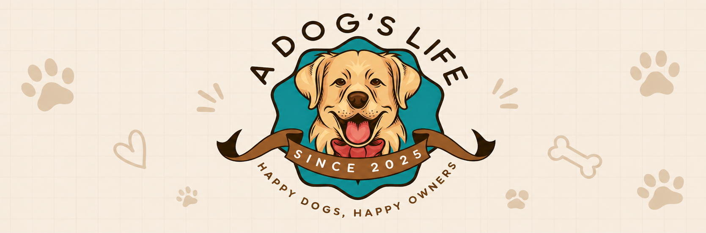

Care Services
Provide your dog with the best daily care, including proper feeding, grooming, and regular exercise to keep them healthy and happy.
Happy DOGS, Happy OWNERS

We believe every dog deserves a happy, healthy, and fun life. Our goal is to help dog owners take better care of their pets and create strong, loving bonds.
View ServicesDogs are more than just pets, they are family. Giving them the right care, attention, and playtime makes a big difference in their lives. From choosing the right toys to making sure they get enough exercise, every small effort helps. At A Dog’s Life, we focus on making life better for both dogs and their owners. A happy dog leads to a happy home.
Provide your dog with the best daily care, including proper feeding, grooming, and regular exercise to keep them healthy and happy.
Help your dog learn good behavior, basic commands, and social skills to build a strong and positive relationship.
Get helpful advice, resources, and guidance to support you in caring for your dog and handling everyday challenges.